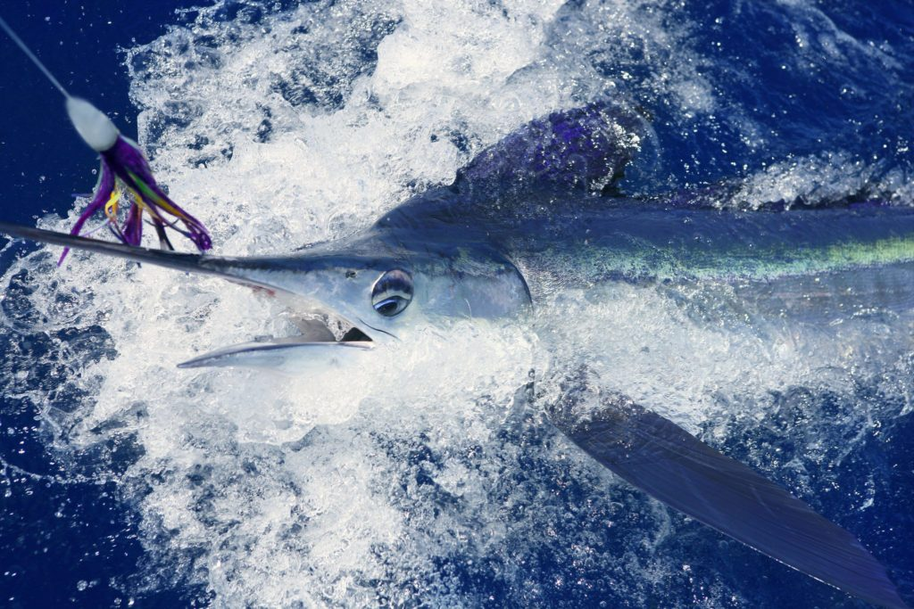
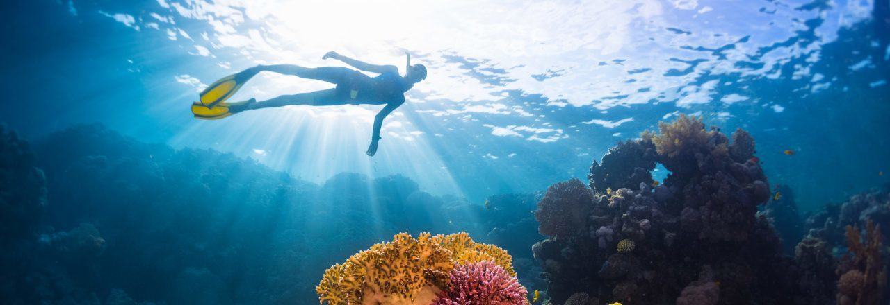

Ifaty est un village balnéaire à 30 km au nord de tuléar. C’est un village accueillant beaucoup de touristes en saison. Il y a des hôtels, des spots de plongée, des restaurants ainsi que des bars locaux qui vous ne laisseront pas indifférent.

Une région des plus fascinantes
Ifaty, Région de pêcheurs
La région d’ifaty est formée par plusieurs villages Vezo. La pêche y est une activité dominante, et pourrez ainsi découvrir différents villages de pêcheurs éparpillés à proximité du lagon qui s’étend sur la côte.
Le village de pêcheur d’Ambotsibotsike est notamment une escale prisée en raison de son impressionnante mangrove. Vous pourrez rejoindre ce village en cheval, en vélo ou quad, mais pour une promenade authentique, privilégiez une virée en pirogue aux côtés des locaux.

Ifaty, une région aux airs de bout du monde
Au nord d’ifaty se trouvent Andavadoaka et Salary se situant au niveau de magnifiques baies où quelques pêcheurs ont élu domicile. Ces sites sont uniques car vous avez l’impression d’être au bout du monde, Vous pouvez y accéder en pirogue qui est le meilleur moyen pour admirer le paysage et le décor qui surplombe les baies. Plongée et camping seront vos activités phares, qui raviront petits et grands.
>
Village de mangily
Une visite dans le village de mangily s’impose également. Les villageois vous y accueilleront chaleureusement et vous feront découvrir les différentes excursions à réaliser aux alentours. En effet, le village est le point de départ de circuits vous menant à divers sites incontournables de la région. Pour n’en citer que quelques-uns, entreprenez une randonnée en direction de la forêt des Mikea ou organisez une sortie en quad dans la réserve de domergue au milieu des baobabs et cactus épineux.